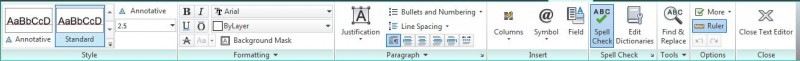
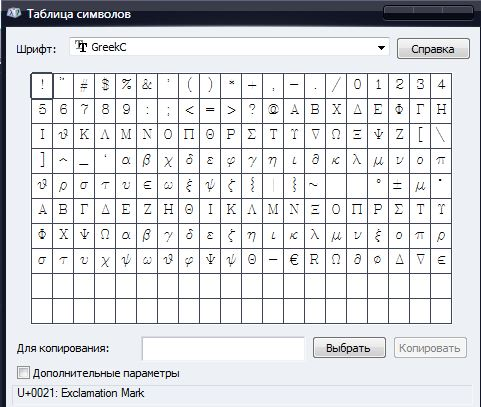

Лекция 8: Работа с текстом в AutoCAD
Трудно представить себе чертеж, не имеющий в себе текстовой информации, в прошлом уроке мы с вами изучили методы и команды проставления размеров. Данный урок посвящен непосредственному изучению работы с текстом.
Средства работы с текстом
Для вставки надписей в чертеж служат команды Dtext — вставка однострочного текста и Mtext — вставка многострочного текста. Для текста предусматривается возможность выбора стиля, то есть имени шрифта, размера шрифта, наклона символов относительно вертикали, поворот текста под определенным углом. Рассмотрим эти команды подробнее.
Однострочный текст ( Dtext )
Способы ввода команды:
Набрать с клавиатуры команду Dtext .
Вызов меню: Draw \ Text \ Single Line Text.
Команда позволяет вставлять однострочные текстовые фрагменты. После ввода команды система выдает запрос о координатах точки.
Specify start point of text or [ Justify / Style ] :
После определения начальной точки выдаются запросы на определение высоты текста, угла поворота и собственно текста:
Specify height < 20.0000 >: 25
Specify rotation angle of text <0 >:
Enter text: Пример ввода однострочного текста.
При выборе ключа Justify к тексту можно применить выравнивание:
(А ) Align — текст размещается между начальной и конечной точками, высота и ширина текста при этом вычисляются автоматически, чтобы не были нарушены пропорции;
( F ) Fit — текст размещается между начальной и конечной точками, высота текста выбирается пользователем
( С ) Center — центрирует текст относительно заданной точки;
(М ) Middle — текст центрируется по горизонтали и по вертикали относительно заданной точки;
( R ) Right — выравнивает строки текста справа;
ТL — выравнивает строка вверх и влево;
ТС — выравнивает строка вверх и по центру;
ТR — выравнивает строка вверх и вправо;
МL — выравнивает строка посередине и слева;
МС — выравнивает строка по средней точке по горизонтали и вертикали;
МR — выравнивает строка посередине и справа;
ВL — выравнивает строка вниз и влево;
ВС — выравнивает строка вниз и по центру;
ВR — выравнивает строка вниз и вправо.
( S ) Style — установить текстовый стиль.
Многострочный текст ( Mtext )
Способы ввода команды:
Набрать с клавиатуры команду Mtext.
Вызов меню: Draw \ Text \ Multiline Text.
Кнопка на панели инструментов. MtT bt
Команда позволяет вводить несколько абзацев текста в рамку заданной ширины. Ширину рамки можно задать мышкой. При введении текст автоматически переносится в новую строку по достижении конца рамки или при нажатии клавиши Enter. В многострочном тексте можно задавать разное форматирования отдельных слов и символов в отличие от однострочного. Предоставляется возможность менять не только параметры шрифта, а также параметры абзацев — выравнивание, межстрочный интервал.
После ввода команды система выдает запрос на ввод координат первого угла рамки и выводит имя текущего стиля и текущую высоту шрифта:
Command: _mtext Current text style: «Standard» Text height: 25
Specify first corner:
Далее выдается запрос на ввод координат противоположного угла рамки (или Высота / Выравнивание / Межстрочный интервал / Поворот / Стиль / Ширина )
Specify opposite corner or [ Height / Justify / Line spacing / Rotation / Style / Width ]
Определив положение и размер рамки, система выводит окно редактора мультитекста и панель Форматирование текста.
По умолчанию система AutoCad предлагает применить к тексту стиль «Standard» Но пользователь имеет право изменять существующие стили и создавать собственные. Для редактирования текстовых стилей пользуются командой Format\Style, которая выводит диалоговое окно Text Style.
При создании нового стиля необходимо ввести его имя и задать необходимые параметры шрифта.
Вставка в текст специальных символов
При наборе текста можно вставлять специальные символы (знак градуса, диаметр и т.п.). С этой целью можно использовать команду Symbol контекстного меню многострочного текста. При выборе команды появляется меню, разворачивающийся пункты которого имеют следующее значение:
Degrees — вставка символа градуса, Plus / Minus – вставка символа плюс-минус, Diameter — вставка символа диаметр, Non-breaking Space – неразрывный пропуск, Other … — открывает окно таблицы символов, которые можно вставить в текст.
Для вставки в текст специальных символов используются также коды, которые начинаются двумя символами процента:
%% d — вставка символа градуса;
%% p — вставка символа плюс-минус;
%% c — вставка символа диаметр;
%%% — Вставка символа процента;
%% u — включение / отключение надчеркивания символов;
%% o — включение / отключение подчеркивание символов;
%% nnn — вставка символа с номером nnn в текущей таблице кодирования символов.
Урок по изучению команд работы с текстом закончен. В следующем уроке мы расскажем о работе со слоями в AutoCAD, их создании и редактировании.